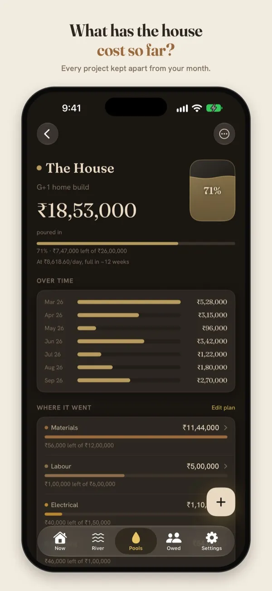
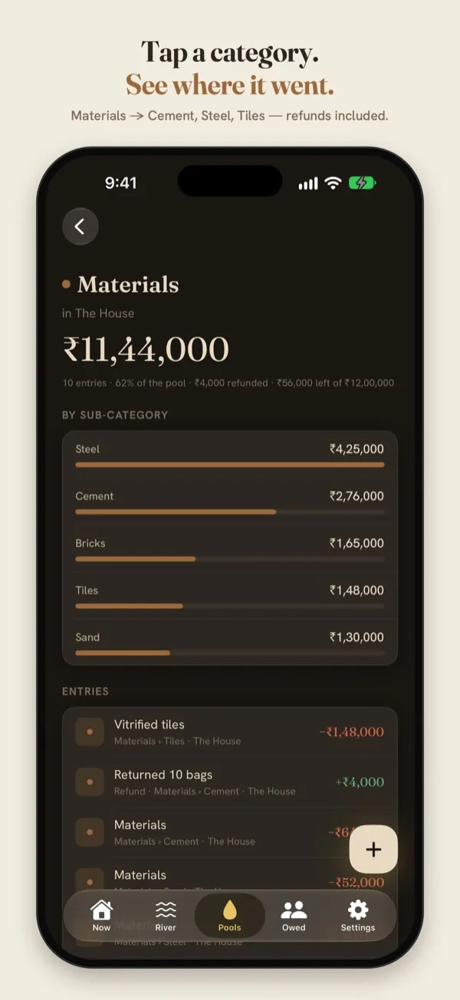

How to track your house construction cost by category
Building a house in India means hundreds of payments over a year or more: cement, steel, sand, the contractor's stage payments, the electrician, the plumber, tiles, paint. Here's a way to keep track of all of it, so “what has the house cost so far?” always has an answer.
Most people start well. There's a notebook, a spreadsheet, a WhatsApp chat with the contractor. By the third month the spreadsheet has stopped, and the payments are scattered across UPI, cash and cheques. The house is mixed in with the groceries in the same bank statement.
The method below takes a few seconds a payment. It works on paper, in a spreadsheet or in an app.
1. Give the house its own running total
Every rupee spent on the build goes into one place set aside for the house. That gives you two totals that answer two different questions:
- This month: what left your account this month, house included. That's real money, and it belongs in the month you paid it.
- The house, so far: everything poured into the build since the first payment, whatever month it was.
The second total is the one a bank statement can't give you, and the one you'll be asked for most: by family, by the contractor when you settle up, by yourself at 2 am.
2. Use a few categories, and keep them the same for the whole build
Eight or nine categories are enough. Fewer and you can't see where the money went; more and you'll stop filing payments properly. These match how a build in India is usually paid for:
| Category | What goes in it |
|---|---|
| Materials | Cement, steel (TMT bars), sand, aggregate, bricks or blocks, tiles |
| Labour | The contractor's stage payments, mistri and helper wages |
| Civil | Excavation, earthwork, waterproofing, anti-termite treatment |
| Electrical | Wiring, conduits, switches, fittings, the meter connection |
| Plumbing | Pipes, fittings, tanks, sanitaryware |
| Finishing | Plaster, putty and paint, doors, windows, grills, polishing |
| Fees & Tax | Plan approval, the architect or engineer, registration |
| Furniture, Appliances | Modular kitchen, wardrobes, fans, geyser, the things that make it liveable |
Pick your categories before the first payment, and resist renaming them halfway through. A category that changes meaning in month six makes the totals meaningless.
3. Split Materials one level deeper
Materials is where most of the money goes, so a single “Materials” total isn't enough. Give it sub-categories: Cement, Steel, Sand, Bricks, Tiles. Then “how much was the cement?” has a number.
Write the quantity in the note: “320 bags”, “2.4 tonnes TMT”. Months later, that note is how you check a supplier's bill or compare a rate.
4. Log on the day you pay, including cash and advances
- Every payment, the same day. A payment logged later is a payment half-forgotten. Advances count the day you pay them, not when the work is done.
- Cash too. Mistri wages and small site purchases are often cash, and they add up faster than anything else.
- Returns are money back. Sent back 10 bags of cement? Log the refund under Cement, so the cement total stays true.
- Who it went to, in the note. “Contractor — first floor slab” beats “labour” when you sit down to settle accounts.
5. Set a plan per category, and watch what's left
If you have an estimate, put a number against each category: ₹8 lakh for materials, ₹4 lakh for labour. Then look at what's left in each, not at a single total that only grows. Overruns on a build are normal; finding out about one in the last month is what hurts.
No estimate yet? The free house construction cost calculator gives a first number from area, floors and quality. Swap in your contractor's figures once you have them.
6. Mark the stages
Foundation, structure, brickwork, electrical and plumbing, finishing. Ticking off a stage next to its running cost tells you more than either does alone, and it's how contractors bill anyway.
What a typical split looks like
Guides from builders and cement companies put labour at roughly a quarter to a third of the total, with steel and cement as the biggest material lines (for example JK Cement and Godrej Properties). Their percentages disagree a lot, mostly because each groups costs differently. Use them to sanity-check a quote, not as a forecast. The split that matters is your own, and the only way to get it is to track it.
Doing this in Ledger
Ledger is a free iPhone app built around exactly this idea. The month and your projects are kept as two different shapes: the month is the river, and the house is a pool you pour into.


Sample data. Tap a category to see where it went.
- Pools → New → The House. Set a budget if you have one. Materials, Labour, Civil, Electrical, Plumbing and Finishing are built in.
- Log a payment in seconds. Use the keypad, or type it the way you'd say it: “cement 24000 house”. Ledger puts it in the house, under Materials. Add Cement, Steel or Sand as a sub-category the first time you log one.
- See the house so far, by category and sub-category, with refunds netted out and what's left of each plan.
- Share a PDF report of the pool with family or the contractor when it's time to settle up.
Everything stays on your iPhone. There's no account, no ads and no tracking.
Track the house in Ledger
Free on the App Store, for iPhone with iOS 17 or later.
Questions
Should the house count in my monthly spending?
Yes, in the month you paid it, because the money really left your account then. Just don't stop there. The month tells you whether you can afford the next payment; the house's own total tells you what the build has cost.
Does this work for a renovation or an interior project?
Yes. The same method works for anything bounded: a renovation, a new kitchen, interiors after possession. Ledger has a Renovation template too.
Do I need to sign up?
No. Ledger works without an account, and your entries never leave your phone.